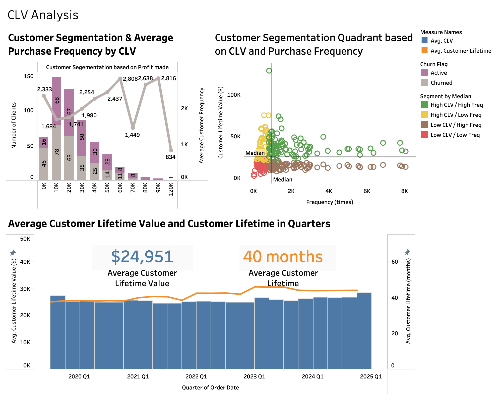
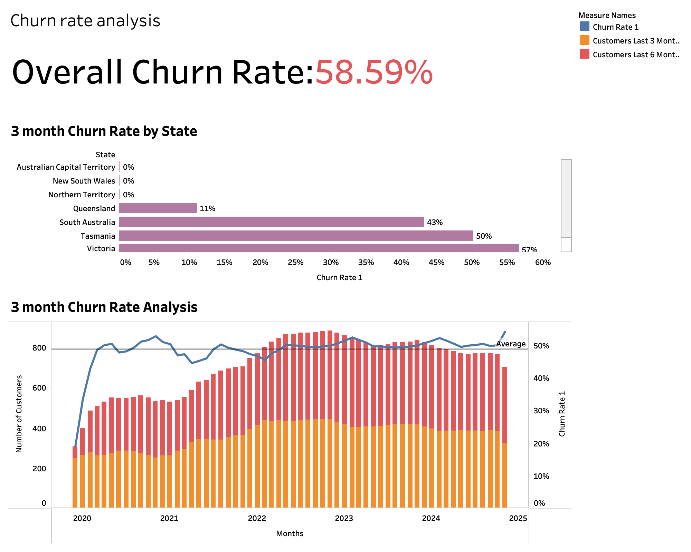
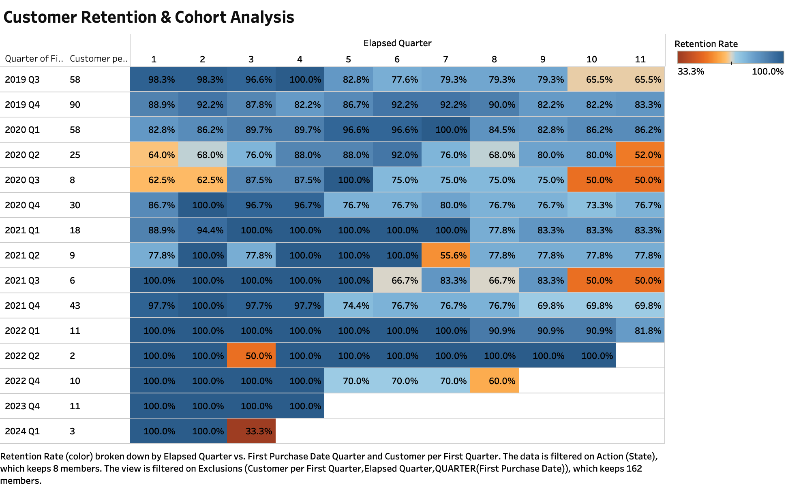
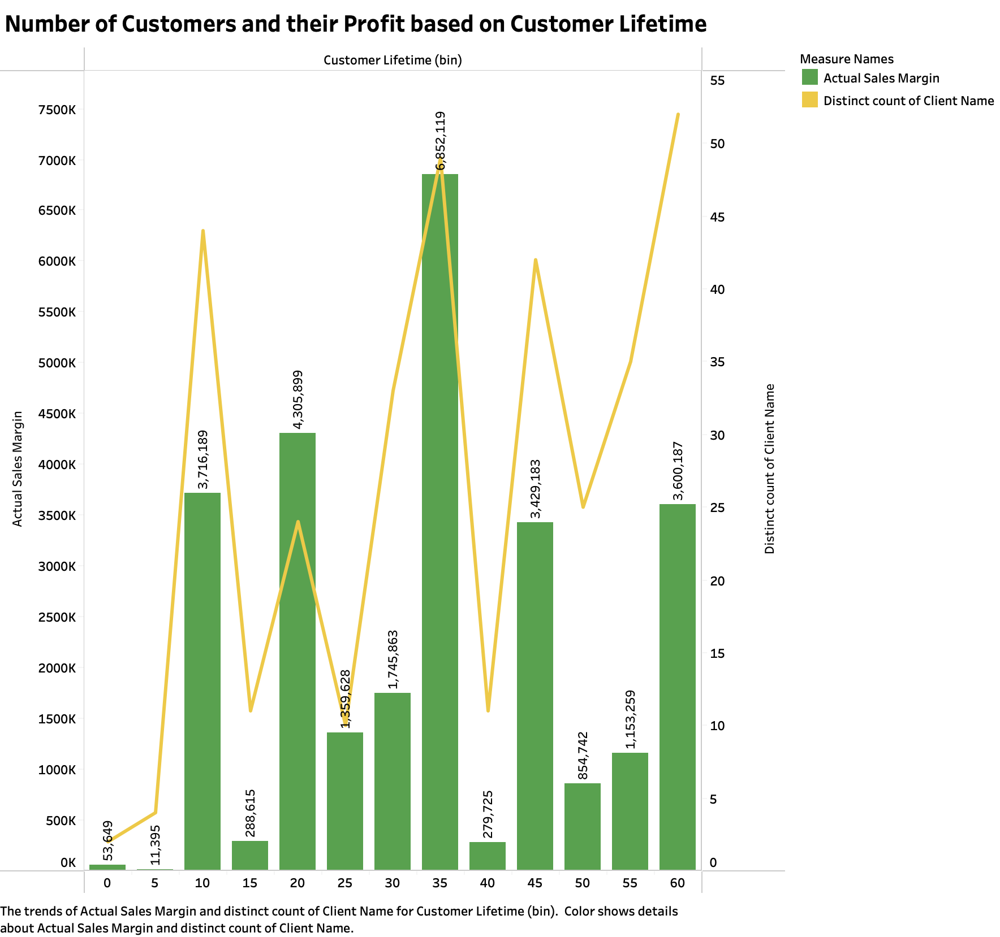

Diagnostic Report · INF30004 Business Intelligence & Data Visualisation, Swinburne
The business looked healthy on paper — profit up, sales steady. Underneath, six in ten customers were walking out the door. My job on this Tableau case study was finding out why, and which regions still had a pulse.
Spikes align with procurement cycles in March, September and November.
CLV has trended upward steadily since 2020 — the core is sound.
More than half the customer base doesn't come back — this is the case.
Field note — Queensland's 11% churn against a 58.6% average isn't luck. Whatever the regional team is doing there is the closest thing we have to a control group.

Segments clients by value and purchase frequency, tracking average CLV ($24,951) and tenure (40 months) by quarter.

The 58.6% headline rate, broken down by state and tracked on a rolling 3-month window against active customers.

A heatmap of retention by acquisition cohort across 11 elapsed quarters — which intakes churn early, which stay.

Margin and client count across lifetime bins — customers at 30–35 months drive a disproportionate share of profit.
The RFM segmentation and CLV model tell a consistent story: the customers Office Essentials Australia already has are worth keeping. Value climbs with tenure, and the 30–35 month band — clients who've stuck around nearly three years — contribute far more profit than their headcount would suggest. This isn't a value problem.
It's a retention problem, and it isn't evenly spread. The cohort heatmap shows some acquisition quarters bleeding customers almost immediately, while others hold steady for a year or more. Overlaid on the state-level churn data, the pattern sharpens: Victoria and Tasmania are where new customers are lost fastest, while Queensland's cohorts retain at close to five times the rate.
Whatever service or engagement pattern is holding Queensland's churn at 11% is the single highest-leverage fix available — apply it to Victoria and Tasmania first.
The cohort heatmap shows most churn happening in a new customer's first year — that's the window for a retention offer, not month 30.
These clients already drive outsized profit. Losing one costs more than losing an average customer — prioritise them in any retention budget.
Prognosis
BI Report — Part B (Group) · 30% of unit
The churn number was the scary one to present — no one likes telling a client six in ten customers leave. But it's also the one that made the report land: a clear problem, backed by a chart, with a region already proving the fix works.